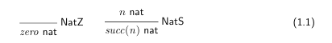
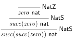
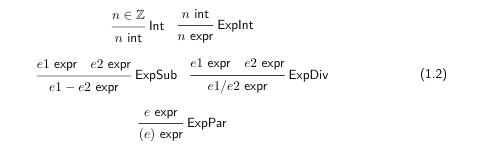

1.1 Judgements
A judgement is a statement about 1 or more objects, ex: n nat states object n is a natural number n is the subject of the statement
judgements either holds (true) or doesnt (false), this is determined by the derivation rules of a judgement.
the derivation rules of a judgement n nat are found below in 1.1
judgements are structured with a hypothesis on the top, and a conclusion on the bottom, like an if/then statement, if there is no hypothesis it is called an axiom, if it has at least 1 hypothesis it is a proper derivation rule. There will always be 1 conclusion regardless of whether it is an axiom or proper. The tidbit on the right of the judgement is just a name to refer it to.
Axioms are always true, while propers require the hypothesis to be true for the conclusion to be true.
A derivation is a tree whose nodes are instances of derivation rules and whose leaves are instances of axioms.
Attached is an example of the judgement of succ(succ(zero)) is found below, try to figure it out before looking at it.
Another judgement example is e expr, which is defined with the judgement n int
e expr in figure 1.2 describes a set of well-formed arithmetic expressions, expressions that is missing a key component of the well formed expression, or has an extra component, or unbalanced parenthesis, are examples of not well-formed expressions (basically anything thats a typical syntax error)
An example of a well-formed expression is ((4/0) -0) expr according to the above derivation rules.
Judgements that are used to define well-formed expressions are called grammars.
  1.2 Inductive Sets
A set of derivation rules for 1 or more judgements is an inductive definition
An inductive definition specifies an inductive set, each element in the set is a judgement, mostly derivable ones.
An example of an inductive set follows the structure
For every axiom J, J is a part of A
For every rule, the rule is applied to J up to n times and becomes a part of A.
For example, an inductive set A for figure 1.1 (above) would be {zero nat, succ(zero) nat, succ(succ(zero)) nat, ...}
Iterated Inductive Definitions are sets of iterated inductive sets, for example, the inductive definition 1.3(below) consists of rules deriving judgements of the form l listNat for lists of natural numbers, the judgements from 1.1 (above) can be used with 1.3
1.2(above) is an example of an iterated inductive set.
**Simultaneous inductive definitions are those in which 2 or more judgements are defined at once. The simplest example is defining n even and n odd 1.4(below)